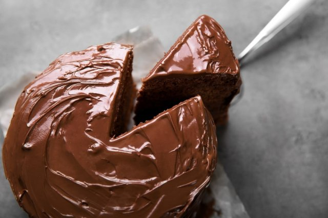

Bienvenido a mi sitio web de recetas
Aquí aprenderás como hacer pastel de chocolate

Dudas....
A continuación podrás leer las dudas más frecuentes sobre la realización de pastel de chocolate
¿Se necesitan muchos ingredientes?
No, es un pastel muy sencillo de realizar, ve a la sección de ingredientes para conocer más
Ingredientes
- 1 taza de harina.
- 1 taza de azúcar.
- 1/4 de taza de cocoa en polvo.
- 1 cucharadita de bicarbonato de sodio.
- 1/4 de taza de mantequilla suave.
- 1/2 cucharadita de vainilla.
- 1 huevo.
- 1/4 de cucharadita de sal.
- 1 1/2 tazas de azúcar glass para el glaseado.
- 125 gramos de chocolate para el glaseado.
- 3 cucharadas de mantequilla para el glaseado.
- 3 cucharadas de agua para el glaseado.
Preparación
- En un recipiente combinar harina, azúcar, cocoa, polvo hornear, bicarbonato y sal. Revolver a baja velocidad con la batidora.
- Agregar leche, mantequilla y vainilla. Batir con batidora a velocidad baja, luego batir 2 minutos a velocidad media, agregar huevo y batir 2 minutos más. Poner en un molde redondo de 22 cms. de diámetro, engrasado y enharinado.
- Hornear a 350ºF por 30 o 35 minutos. Sacar del horno y enfriar en una rejilla 10 minutos. Sacar del molde y dejar enfriar completamente.
- Para hacer el glaseado: derretir chocolate y mantequilla a fuego suave, remover del fuego y agregar el azúcar glass y el agua caliente moviendo siempre. Si es necesario agregar mas de agua para tener la consistencia de glaseado.
- Glasear el pastel y dejar escurrir por los lados a cubrirlo totalmente
Ver otra receta similar
Galletas con chispitas de chocolate
¿Dónde comprar? - En Cali
Don Jacobo postres y pasteles
Conoce más de las recetas realizadas por mi
| Nombre receta |
Descripción |
Ver Más |
| Postre de maracuyá |
Postre ligero y saludable |
Ver aquí |
| Parfait de frambuesa |
Fácil y rápido especial para fiestas |
Ver aquí |
|
*Todos los postres son fáciles de realizar |